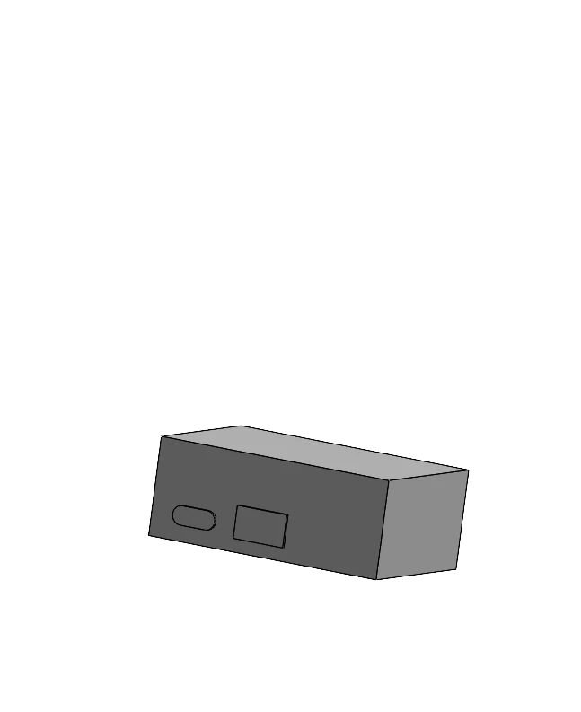
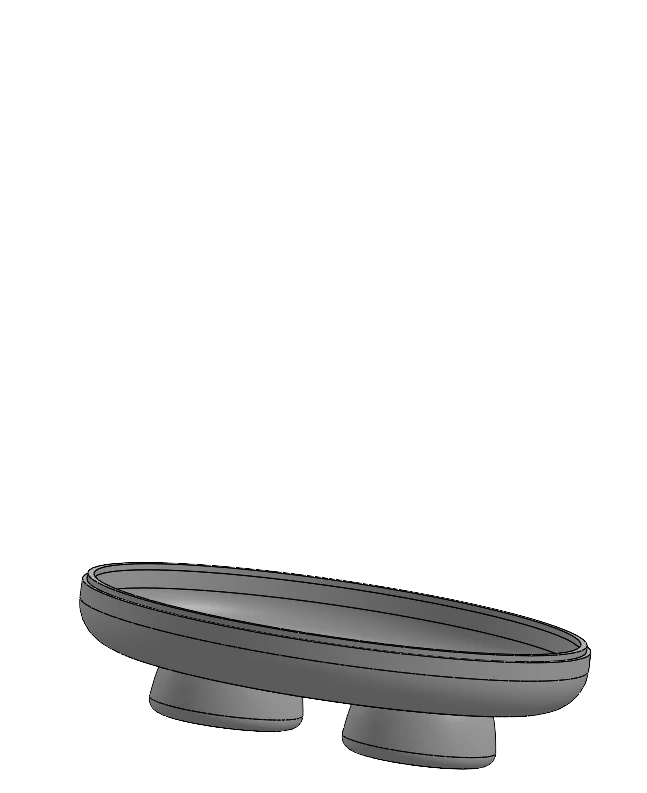
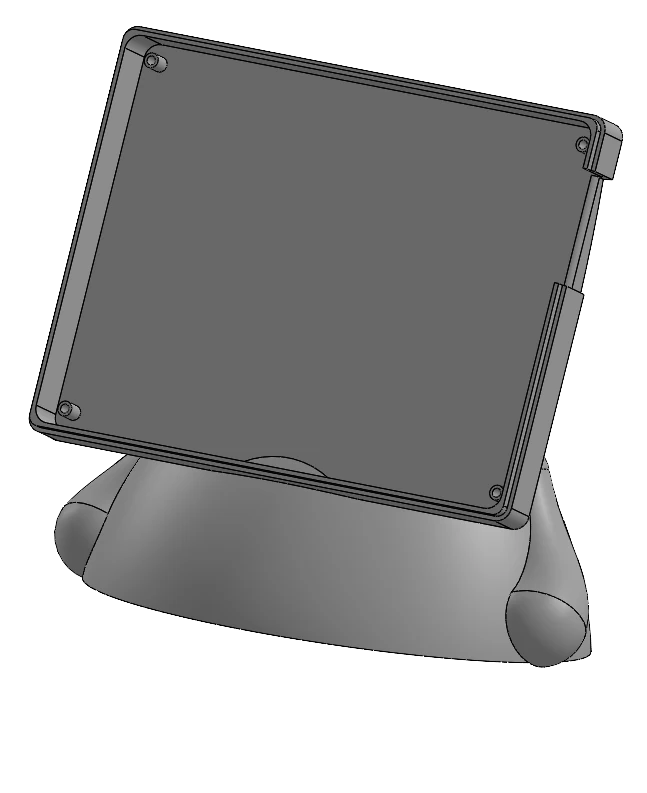
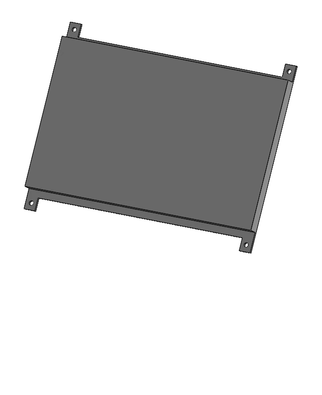
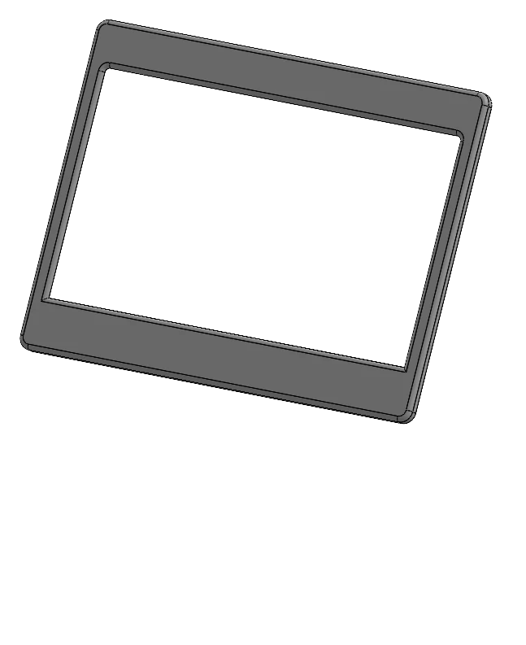
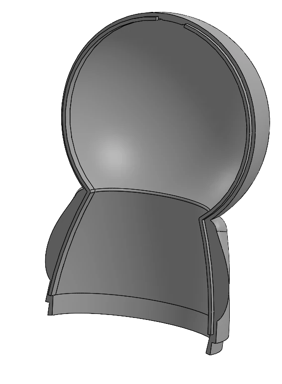
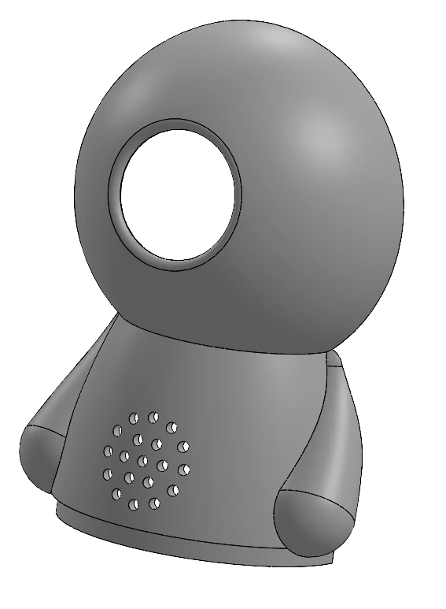
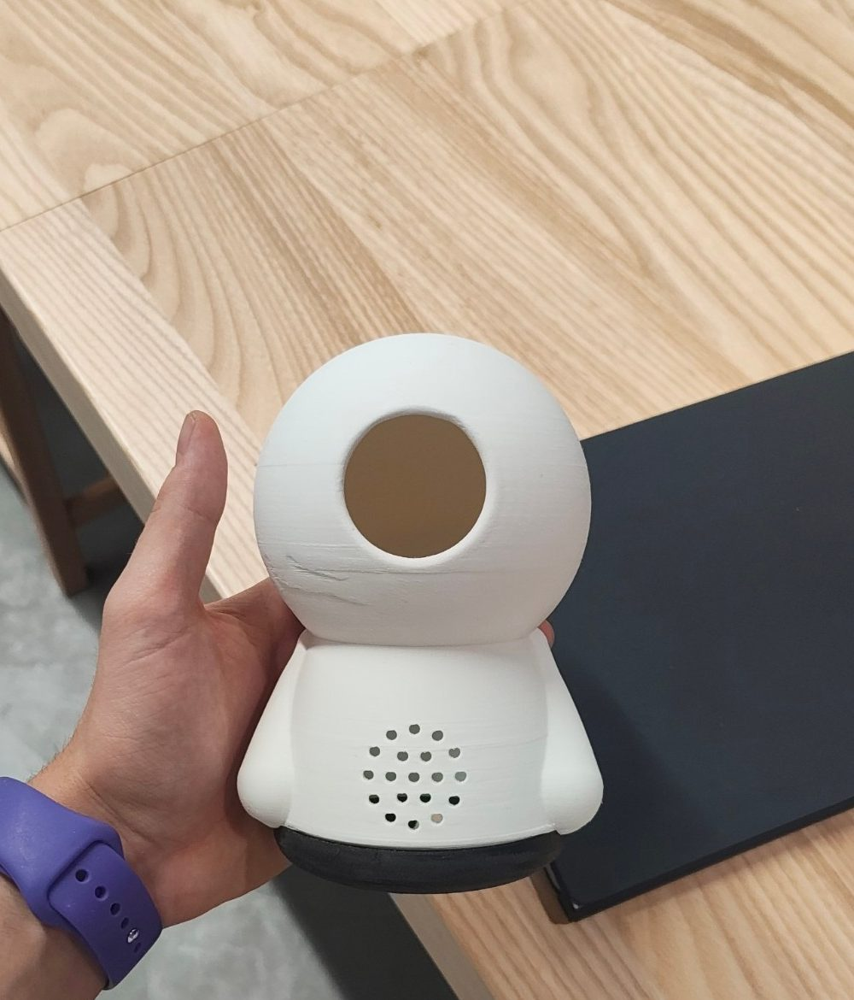

Sentinel robot
E3 Sentinel and Scout: a two-robot system that monitors air quality and conditions in the E3 MakerSpace. A Trinity Robotics team project built in two days, for which I designed and manufactured every part.
| Status | Finished (version 1 prototype) |
|---|---|
| Dates | November 2026, built in 2 days |
| Team | Trinity Robotics |
| My role | Mechanical design and manufacturing: all CAD, 3D printing and post-processing |
| Size | Sentinel 22 cm tall; Scout 15 cm tall |

What it does
- Detects smoke and solder fumes
- Tracks temperature and humidity
- Reacts to conditions with animated facial expressions
- Sounds a buzzer when something is wrong
- Shows live readings, graphs and alerts on a 7-inch dashboard
Goal and constraints
The E3 MakerSpace is full of equipment that affects the air and the room around it: soldering stations, a laser cutter and 3D printers. The aim was to monitor conditions in the space and help make sure it stays safe.
- Time. The whole system had to be designed, printed and assembled in two days.
- Material. Filament had to be used economically, so parts were designed to need as little support material as possible.
How it works
The system has two parts. Scout, the small robot, measures the room and sends its readings over Wi-Fi to Sentinel, the larger robot, which displays them on its dashboard.
| Scout: controller | ESP32-S3 |
|---|---|
| Scout: sensors | DHT20 (temperature and humidity); air-quality sensor (CO2, TVOC, formaldehyde) TODO: air-quality sensor model |
| Scout: display | 1.28-inch round touch LCD (face and touch input) |
| Scout: power | USB-C, 5 V |
| Link | Wi-Fi |
| Sentinel: computer | Raspberry Pi 4 Model B, running the dashboard |
| Sentinel: display | 7-inch HDMI LCD (C): graphs and alerts |
The electronics and software were built by other team members.
My design
I designed every part of both robots in SolidWorks.
- Scout. Mounts and connection points for the electronics and the round face screen.
- Sentinel. Dedicated mounts for the 7-inch screen and a cover that encloses it.
- Screen mounting. Both screens are held securely with screws and printed mounts. In version 1 the remaining electronics sit loose inside the body.
- Ventilation and sound. Openings in the shell let room air reach the sensors, so readings reflect the space rather than the inside of the robot, and let the buzzer be heard.
- Split bodies. Each body is divided into three or four printed sections, which cuts down on support material and saves filament.
Sentinel





-
05
Screen bezel
-
04
Display panel
-
03
Body shell
-
02
Raspberry Pi (simplified placeholder model)
-
01
Bottom ring and feet
Scout: the small robot


-
04
Ring
-
03
Front shell
-
02
Back shell
-
01
Bottom
Build
| Printer | Bambu Lab A1 |
|---|---|
| Material | White and black PLA |
| Scout | Printed on four printers in parallel to meet the deadline; about 5 hours of printing on a single printer |
| Sentinel | Three printed parts; about 15 hours of printing in total |
| Post-processing | Sanding for fit |
| Software | SolidWorks, Bambu Lab slicer |


Results
The version 1 prototype works and tracks all of its data correctly. At the Trinity Robotics stand, visitors guessed it had taken anywhere from two weeks to five years to build; it took two days.
Problems and how I solved them
Fit and tolerances
The small electronic components needed tighter tolerances than the Bambu Lab A1 could reliably print. Some components did not fit their mounts, and the joints between body sections were too tight. I sanded the affected parts by hand until everything assembled correctly.
Plans for version 2
- Count the number of people in the MakerSpace.
- Mount Sentinel on the wall.
- Improve ventilation in Scout so nothing inside affects its readings.